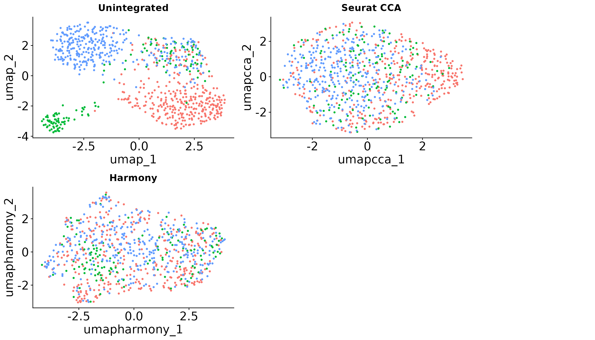

1. Installation
To install the package, you need to install the
batchelor and MatrixGenerics package from
Bioconductor.
# # Check if BioManager is installed, install if not
# if (!requireNamespace("BiocManager", quietly = TRUE))
# install.packages("BiocManager")
#
# # Check if 'batchelor' is installed, install if not
# if (!requireNamespace("batchelor", quietly = TRUE))
# BiocManager::install("batchelor")
#
# # Check if 'MatrixGenerics' is installed, install if not
# if (!requireNamespace("MatrixGenerics", quietly = TRUE))
# BiocManager::install("MatrixGenerics")The SCIntRuler can be installed using
devtools by the following commands, the source code can be
found at GitHub.
# devtools::install_github("yuelyu21/SCIntRuler") After the installation, the package can be loaded with
2. Explore with an example data
Let’s start with an example data. We conducted a series of simulation
studies to assess the efficacy of SCIntRuler in guiding the
integration selection under different scenarios with varying degrees of
shared information among datasets. We generated the simulation data
based on a real Peripheral Blood Mononuclear Cells (PBMC)
scRNA-seq dataset.
Overview of the data
This dataset is a subset of what we used in our Simulation
2, where we have three studies. In each study, we randomly drew
different numbers of CD4 T helper cells, B cells, CD14 monocytes, and
CD56 NK cells to mimic four real-world scenarios with three data sources
Simulation 2 introduces a moderate overlap, with 20.3%
cells sharing the same cell type identity. There are 2000 B cells and
400 CD4T cells in the first study, 700 CD14Mono cells and 400 CD4T cells
in the second study, 2000 CD56NK cells and 400 CD4T cells in the third
study. This data is already in Seurat format and can be
found under /data. There are 32738 genes and 5900 cells in
simulation 2. Here, we subset 800 cells with 3000 genes.
SCIntRuler::sim_data
#> An object of class Seurat
#> 3000 features across 800 samples within 1 assay
#> Active assay: RNA (3000 features, 1244 variable features)
#> 3 layers present: counts, data, scale.data
#> 2 dimensional reductions calculated: pca, umap
data("sim_data")
# labels <- c(rep("Bcell", 2000), rep("CD4T", 400),
# rep("CD14Mono", 700), rep("CD4T", 400),
# rep("CD56NK", 2000), rep("CD4T", 400))
# study <- c(rep("Study1", 2400),
# rep("Study2", 1100),
# rep("Study3", 2400))
#
# tmpMeta <- sim_data[[]]
# tmpMeta["CellType"] <- labels
# tmpMeta["Study"] <- study
# # Add the metadata
# sim_data <- AddMetaData(sim_data, tmpMeta)
# sim_s <- subset(x = sim_data, downsample = 800)
# sim_cs <- sim_s@assays$RNA@counts[sample(32738,3000),]
# sim_data <- CreateSeuratObject(counts = sim_cs)
# sim_data <- AddMetaData(sim_data, sim_s[[]])
head(sim_data[[]])
#> orig.ident nCount_RNA nFeature_RNA CellType Study
#> AATTACGAATCGGT-1 SeuratProject 1035 365 Bcell Study1
#> AGAGCGGAGTCCTC-1 SeuratProject 1157 448 Bcell Study1
#> TTCTTACTGGTACT-1 SeuratProject 2824 884 Bcell Study1
#> TGACGCCTACACCA-1 SeuratProject 1801 644 Bcell Study1
#> ATTTGCACCTATGG-1 SeuratProject 2501 749 Bcell Study1
#> AGAACAGATGGAGG-1 SeuratProject 1113 391 Bcell Study1
#> RNA_snn_res.0.5 seurat_clusters
#> AATTACGAATCGGT-1 0 0
#> AGAGCGGAGTCCTC-1 0 0
#> TTCTTACTGGTACT-1 0 0
#> TGACGCCTACACCA-1 0 0
#> ATTTGCACCTATGG-1 0 0
#> AGAACAGATGGAGG-1 0 0Data pre-process and visulization with Seurat
Followed by the tutorial of Seurat,
we first pre-processed the data by the functions
NormalizeData, FindVariableFeature,
ScaleData, RunPCA, FindNeighbors,
FinsClusters and RunUMAP from
Seurat and then draw the UMAP by using DimPlot
stratified by Study and Cell Type.
# Normalize the data
sim_data <- NormalizeData(sim_data)
# Identify highly variable features
sim_data <- FindVariableFeatures(sim_data, selection.method = "vst", nfeatures = 2000)
# Scale the data
all.genes <- rownames(sim_data)
sim_data <- ScaleData(sim_data, features = all.genes)
# Perfom linear dimensional reduction
sim_data <- RunPCA(sim_data, features = VariableFeatures(object = sim_data))
# Cluster the cells
sim_data <- FindNeighbors(sim_data, dims = 1:20)
sim_data <- FindClusters(sim_data, resolution = 0.5)
#> Modularity Optimizer version 1.3.0 by Ludo Waltman and Nees Jan van Eck
#>
#> Number of nodes: 800
#> Number of edges: 46490
#>
#> Running Louvain algorithm...
#> Maximum modularity in 10 random starts: 0.7653
#> Number of communities: 4
#> Elapsed time: 0 seconds
sim_data <- RunUMAP(sim_data, dims = 1:20)UMAP separated by Study
p1 <- DimPlot(sim_data, reduction = "umap", label = FALSE, pt.size = .5, group.by = "Study", repel = TRUE)
p1
UMAP separated by cell type
p2 <- DimPlot(sim_data, reduction = "umap", label = TRUE, pt.size = .8, group.by = "CellType", repel = TRUE)
p2
Try different data integration methods
To further illustrate which integration method is more suitable under different settings, we visualize the data without integration (simply merging the single cell objects) and after applying three popular data integration methods: CCA, Harmony and Scanorama. The UMAP visualizations across the simulations indicate that the choice of integration method significantly impacts the resulting data integration.
Run Seurat CCA
Seurat CCA can be directly applied by functions
FindIntegrationAnchors and IntegrateData in
Seurat package. For more information, please seeTutorial
of SeuratCCA.
### CCA
sim.list <- SplitObject(sim_data, split.by = "Study")
sim.anchors <- FindIntegrationAnchors(object.list = sim.list, dims = 1:30, reduction = "cca")
sim.int <- IntegrateData(anchorset = sim.anchors, dims = 1:30, new.assay.name = "CCA")
# run standard anlaysis workflow
sim.int <- ScaleData(sim.int, verbose = FALSE)
sim.int <- RunPCA(sim.int, npcs = 30, verbose = FALSE)
sim.int <- RunUMAP(sim.int, dims = 1:30, reduction.name = "umap_cca")Run Harmony
Harmony is an algorithm for performing integration of single cell
genomics datasets. To run harmony, we need to install
harmony package. For more information, please see Quick
start to Harmony.
### Harmony
# install.packages("harmony")
sim.harmony <- harmony::RunHarmony(sim_data, group.by.vars = "Study", reduction.use = "pca",
#dims.use = 1:20, assay.use = "RNA"
)
sim.int[["harmony"]] <- sim.harmony[["harmony"]]
sim.int <- RunUMAP(sim.int, dims = 1:20, reduction = "harmony", reduction.name = "umap_harmony")Run Scanorama
To run Scanorama, we need to first load an virtual environment and
install scanorama which can be directly imported in
R. Then, we can run scanorama integration and UMAP based on
scanorama projection.
# # create a new environment
# reticulate::virtualenv_create("r-reticulate")
#
# # install SciPy
# reticulate::virtualenv_install("r-reticulate", "scanorama")
#
# reticulate::use_virtualenv("r-reticulate")
#
# # library(reticulate)
# scanorama <- reticulate::import('scanorama')
### Scanorama
# counts <- sim_data@assays$RNA@counts
# dim(counts)
# sim_Dat1 <- counts[,1:2400]
# sim_Dat2 <- counts[,2400+1:1100]
# sim_Dat3 <- counts[,3500+1:2400]
#
# datasets <- list( t(as.matrix(sim_Dat1)), t(as.matrix(sim_Dat2)) ,t(as.matrix(sim_Dat3)))
# # List of gene lists:
# genes_list <- list()
# for(i in 1:3) {
# genes_list[[i]] <- colnames(datasets[[i]])
# }
#
# integrated.data <- scanorama$integrate(datasets, genes_list)
#
# intdimred <- do.call(rbind, integrated.data[[1]])
# colnames(intdimred) <- paste0("PC_", 1:100)
# rownames(intdimred) <- colnames(sim.int)
#
# # Add standard deviations in order to draw Elbow Plots in Seurat
# stdevs <- apply(intdimred, MARGIN = 2, FUN = sd)
#
# sim.int[["scanorama"]] <- CreateDimReducObject(embeddings = intdimred, stdev = stdevs,
# key = "scanorama_", assay = "RNA")
#
# sim.int <- RunUMAP(sim.int, dims = 1:100, reduction = "scanorama", reduction.name = "umap_scanorama")UMAP figures for all integrated data
p5 <- DimPlot(sim_data, reduction = "umap", group.by = "Study") +
theme(legend.position = "none",
# axis.line.y = element_line( size = 2, linetype = "solid"),
# axis.line.x = element_line( size = 2, linetype = "solid"),
axis.text.y = element_text( color="black", size=20),
axis.title.y = element_text(color="black", size=20),
axis.text.x = element_text( color="black", size=20),
axis.title.x = element_text(color="black", size=20))
p6 <- DimPlot(sim.int, reduction = "umap_cca", group.by = "Study") +
theme(legend.position = "none",
# axis.line.y = element_line( size = 2, linetype = "solid"),
# axis.line.x = element_line( size = 2, linetype = "solid"),
axis.text.y = element_text( color="black", size=20),
axis.title.y = element_text(color="black", size=20),
axis.text.x = element_text( color="black", size=20),
axis.title.x = element_text(color="black", size=20))
p7 <- DimPlot(sim.int, reduction = "umap_harmony", group.by = "Study") +
theme(legend.position = "none",
# axis.line.y = element_line( size = 2, linetype = "solid"),
# axis.line.x = element_line( size = 2, linetype = "solid"),
axis.text.y = element_text( color="black", size=20),
axis.title.y = element_text(color="black", size=20),
axis.text.x = element_text( color="black", size=20),
axis.title.x = element_text(color="black", size=20))
# p8 <- DimPlot(sim.int, reduction = "umap_scanorama", group.by = "Study") +
# theme(legend.position = "none",
# # axis.line.y = element_line( size = 2, linetype = "solid"),
# # axis.line.x = element_line( size = 2, linetype = "solid"),
# axis.text.y = element_text( color="black", size=20),
# axis.title.y = element_text(color="black", size=20),
# axis.text.x = element_text( color="black", size=20),
# axis.title.x = element_text(color="black", size=20))
leg <- cowplot::get_legend(p5)
#> Warning in get_plot_component(plot, "guide-box"): Multiple components found;
#> returning the first one. To return all, use `return_all = TRUE`.
gridExtra::grid.arrange(gridExtra::arrangeGrob(p5 + NoLegend() + ggtitle("Unintegrated"),
p6 + NoLegend() + ggtitle("Seurat CCA") ,
p7 + NoLegend() + ggtitle("Harmony"),
#p8 + NoLegend() + ggtitle("Scanorama"),
nrow = 2),
leg, ncol = 2, widths = c(20, 5))
3. Applying SCIntRuler to example data
We first split the sim_data by Study and
then run GetCluster and NormData to get
Louvain clusters and normalized count matrix for each study.
Furthermore, to perform the permutation test of relative-between cluster
distance, FindNNDist can be then applied. We also have
another function FindNNDistC that based on
Rcpp and C++ for faster matrix
calculation.
sim.list <- SplitObject(sim_data, split.by = "Study")
fullcluster <- GetCluster(sim.list,50,200)
#> Modularity Optimizer version 1.3.0 by Ludo Waltman and Nees Jan van Eck
#>
#> Number of nodes: 336
#> Number of edges: 21610
#>
#> Running Louvain algorithm...
#> Maximum modularity in 10 random starts: 0.5099
#> Number of communities: 2
#> Elapsed time: 0 seconds
#> Modularity Optimizer version 1.3.0 by Ludo Waltman and Nees Jan van Eck
#>
#> Number of nodes: 136
#> Number of edges: 4813
#>
#> Running Louvain algorithm...
#> Maximum modularity in 10 random starts: 0.7201
#> Number of communities: 2
#> Elapsed time: 0 seconds
#> Modularity Optimizer version 1.3.0 by Ludo Waltman and Nees Jan van Eck
#>
#> Number of nodes: 328
#> Number of edges: 22343
#>
#> Running Louvain algorithm...
#> Maximum modularity in 10 random starts: 0.5141
#> Number of communities: 2
#> Elapsed time: 0 seconds
normCount <- NormData(sim.list)
#distmat <- FindNNDist(fullcluster, normCount, 20)
distmat <- FindNNDistC(fullcluster, normCount, 20)
#> | | | 0% | |==================== | 33% | |======================================== | 67% | |============================================================| 100%Calculate SCIntRuler and and an associated visualization
In this example data, we got a SCIntRuler score of 0.57, there is a noticeable but not large overlap of cell types across the datasets, showing a moderate level of shared information. The integration is essential to adjust for these effects and align the shared cell populations, ensuring that the integrated dataset accurately reflects the biological composition. Thus, the methods which can offer a balance between correcting for batch effects and maintaining biological variation would be the best. The UMAP visualizations across the simulations indicate that the choice of integration method significantly impacts the resulting data integration.

sim_result <- list(fullcluster,normCount,distmat,testres)SessionInfo
#> ─ Session info ───────────────────────────────────────────────────────────────
#> setting value
#> version R version 4.4.0 (2024-04-24)
#> os Ubuntu 22.04.4 LTS
#> system x86_64, linux-gnu
#> ui X11
#> language en
#> collate C.UTF-8
#> ctype C.UTF-8
#> tz UTC
#> date 2024-05-06
#> pandoc 3.1.11 @ /opt/hostedtoolcache/pandoc/3.1.11/x64/ (via rmarkdown)
#>
#> ─ Packages ───────────────────────────────────────────────────────────────────
#> package * version date (UTC) lib source
#> abind 1.4-5 2016-07-21 [1] RSPM
#> batchelor 1.20.0 2024-04-30 [1] Bioconduc~
#> beachmat 2.20.0 2024-04-30 [1] Bioconduc~
#> Biobase 2.64.0 2024-04-30 [1] Bioconduc~
#> BiocGenerics 0.50.0 2024-04-30 [1] Bioconduc~
#> BiocNeighbors 1.22.0 2024-04-30 [1] Bioconduc~
#> BiocParallel 1.38.0 2024-04-30 [1] Bioconduc~
#> BiocSingular 1.20.0 2024-04-30 [1] Bioconduc~
#> bslib 0.7.0 2024-03-29 [1] RSPM
#> cachem 1.0.8 2023-05-01 [1] RSPM
#> cli 3.6.2 2023-12-11 [1] RSPM
#> cluster 2.1.6 2023-12-01 [3] CRAN (R 4.4.0)
#> codetools 0.2-20 2024-03-31 [3] CRAN (R 4.4.0)
#> coin 1.4-3 2023-09-27 [1] RSPM
#> colorspace 2.1-0 2023-01-23 [1] RSPM
#> cowplot 1.1.3 2024-01-22 [1] RSPM
#> crayon 1.5.2 2022-09-29 [1] RSPM
#> data.table 1.15.4 2024-03-30 [1] RSPM
#> DelayedArray 0.30.0 2024-04-30 [1] Bioconduc~
#> DelayedMatrixStats 1.26.0 2024-04-30 [1] Bioconduc~
#> deldir 2.0-4 2024-02-28 [1] RSPM
#> desc 1.4.3 2023-12-10 [1] RSPM
#> devtools 2.4.5 2022-10-11 [1] RSPM
#> digest 0.6.35 2024-03-11 [1] RSPM
#> dotCall64 1.1-1 2023-11-28 [1] RSPM
#> dplyr * 1.1.4 2023-11-17 [1] RSPM
#> ellipsis 0.3.2 2021-04-29 [1] RSPM
#> evaluate 0.23 2023-11-01 [1] RSPM
#> fansi 1.0.6 2023-12-08 [1] RSPM
#> farver 2.1.1 2022-07-06 [1] RSPM
#> fastDummies 1.7.3 2023-07-06 [1] RSPM
#> fastmap 1.1.1 2023-02-24 [1] RSPM
#> fitdistrplus 1.1-11 2023-04-25 [1] RSPM
#> fs 1.6.4 2024-04-25 [1] RSPM
#> future 1.33.2 2024-03-26 [1] RSPM
#> future.apply 1.11.2 2024-03-28 [1] RSPM
#> generics 0.1.3 2022-07-05 [1] RSPM
#> GenomeInfoDb 1.40.0 2024-04-30 [1] Bioconduc~
#> GenomeInfoDbData 1.2.12 2024-05-06 [1] Bioconductor
#> GenomicRanges 1.56.0 2024-05-01 [1] Bioconduc~
#> ggplot2 * 3.5.1 2024-04-23 [1] RSPM
#> ggrepel 0.9.5 2024-01-10 [1] RSPM
#> ggridges 0.5.6 2024-01-23 [1] RSPM
#> globals 0.16.3 2024-03-08 [1] RSPM
#> glue 1.7.0 2024-01-09 [1] RSPM
#> goftest 1.2-3 2021-10-07 [1] RSPM
#> gridExtra 2.3 2017-09-09 [1] RSPM
#> gtable 0.3.5 2024-04-22 [1] RSPM
#> harmony 1.2.0 2023-11-29 [1] RSPM
#> highr 0.10 2022-12-22 [1] RSPM
#> htmltools 0.5.8.1 2024-04-04 [1] RSPM
#> htmlwidgets 1.6.4 2023-12-06 [1] RSPM
#> httpuv 1.6.15 2024-03-26 [1] RSPM
#> httr 1.4.7 2023-08-15 [1] RSPM
#> ica 1.0-3 2022-07-08 [1] RSPM
#> igraph 2.0.3 2024-03-13 [1] RSPM
#> IRanges 2.38.0 2024-04-30 [1] Bioconduc~
#> irlba 2.3.5.1 2022-10-03 [1] RSPM
#> jquerylib 0.1.4 2021-04-26 [1] RSPM
#> jsonlite 1.8.8 2023-12-04 [1] RSPM
#> KernSmooth 2.23-22 2023-07-10 [3] CRAN (R 4.4.0)
#> knitr 1.46 2024-04-06 [1] RSPM
#> labeling 0.4.3 2023-08-29 [1] RSPM
#> later 1.3.2 2023-12-06 [1] RSPM
#> lattice 0.22-6 2024-03-20 [3] CRAN (R 4.4.0)
#> lazyeval 0.2.2 2019-03-15 [1] RSPM
#> leiden 0.4.3.1 2023-11-17 [1] RSPM
#> libcoin 1.0-10 2023-09-27 [1] RSPM
#> lifecycle 1.0.4 2023-11-07 [1] RSPM
#> listenv 0.9.1 2024-01-29 [1] RSPM
#> lmtest 0.9-40 2022-03-21 [1] RSPM
#> magrittr 2.0.3 2022-03-30 [1] RSPM
#> MASS 7.3-60.2 2024-04-24 [3] local
#> Matrix 1.7-0 2024-03-22 [3] CRAN (R 4.4.0)
#> MatrixGenerics 1.16.0 2024-04-30 [1] Bioconduc~
#> matrixStats 1.3.0 2024-04-11 [1] RSPM
#> memoise 2.0.1 2021-11-26 [1] RSPM
#> mime 0.12 2021-09-28 [1] RSPM
#> miniUI 0.1.1.1 2018-05-18 [1] RSPM
#> modeltools 0.2-23 2020-03-05 [1] RSPM
#> multcomp 1.4-25 2023-06-20 [1] RSPM
#> munsell 0.5.1 2024-04-01 [1] RSPM
#> mvtnorm 1.2-4 2023-11-27 [1] RSPM
#> nlme 3.1-164 2023-11-27 [3] CRAN (R 4.4.0)
#> parallelly 1.37.1 2024-02-29 [1] RSPM
#> patchwork 1.2.0 2024-01-08 [1] RSPM
#> pbapply 1.7-2 2023-06-27 [1] RSPM
#> pillar 1.9.0 2023-03-22 [1] RSPM
#> pkgbuild 1.4.4 2024-03-17 [1] RSPM
#> pkgconfig 2.0.3 2019-09-22 [1] RSPM
#> pkgdown 2.0.9 2024-04-18 [1] RSPM
#> pkgload 1.3.4 2024-01-16 [1] RSPM
#> plotly 4.10.4 2024-01-13 [1] RSPM
#> plyr 1.8.9 2023-10-02 [1] RSPM
#> png 0.1-8 2022-11-29 [1] RSPM
#> polyclip 1.10-6 2023-09-27 [1] RSPM
#> profvis 0.3.8 2023-05-02 [1] RSPM
#> progressr 0.14.0 2023-08-10 [1] RSPM
#> promises 1.3.0 2024-04-05 [1] RSPM
#> purrr 1.0.2 2023-08-10 [1] RSPM
#> R6 2.5.1 2021-08-19 [1] RSPM
#> ragg 1.3.0 2024-03-13 [1] RSPM
#> RANN 2.6.1 2019-01-08 [1] RSPM
#> RColorBrewer 1.1-3 2022-04-03 [1] RSPM
#> Rcpp 1.0.12 2024-01-09 [1] RSPM
#> RcppAnnoy 0.0.22 2024-01-23 [1] RSPM
#> RcppHNSW 0.6.0 2024-02-04 [1] RSPM
#> remotes 2.5.0 2024-03-17 [1] RSPM
#> reshape2 1.4.4 2020-04-09 [1] RSPM
#> ResidualMatrix 1.14.0 2024-04-30 [1] Bioconduc~
#> reticulate 1.36.1 2024-04-22 [1] RSPM
#> RhpcBLASctl 0.23-42 2023-02-11 [1] RSPM
#> rlang 1.1.3 2024-01-10 [1] RSPM
#> rmarkdown 2.26 2024-03-05 [1] RSPM
#> ROCR 1.0-11 2020-05-02 [1] RSPM
#> RSpectra 0.16-1 2022-04-24 [1] RSPM
#> rsvd 1.0.5 2021-04-16 [1] RSPM
#> Rtsne 0.17 2023-12-07 [1] RSPM
#> S4Arrays 1.4.0 2024-04-30 [1] Bioconduc~
#> S4Vectors 0.42.0 2024-04-30 [1] Bioconduc~
#> sandwich 3.1-0 2023-12-11 [1] RSPM
#> sass 0.4.9 2024-03-15 [1] RSPM
#> ScaledMatrix 1.12.0 2024-04-30 [1] Bioconduc~
#> scales 1.3.0 2023-11-28 [1] RSPM
#> scattermore 1.2 2023-06-12 [1] RSPM
#> SCIntRuler * 0.99.0 2024-05-06 [1] local
#> sctransform 0.4.1 2023-10-19 [1] RSPM
#> scuttle 1.14.0 2024-04-30 [1] Bioconduc~
#> sessioninfo 1.2.2 2021-12-06 [1] RSPM
#> Seurat * 5.0.3 2024-03-18 [1] RSPM
#> SeuratObject * 5.0.1 2023-11-17 [1] RSPM
#> shiny 1.8.1.1 2024-04-02 [1] RSPM
#> SingleCellExperiment 1.26.0 2024-04-30 [1] Bioconduc~
#> sp * 2.1-4 2024-04-30 [1] RSPM
#> spam 2.10-0 2023-10-23 [1] RSPM
#> SparseArray 1.4.0 2024-04-30 [1] Bioconduc~
#> sparseMatrixStats 1.16.0 2024-04-30 [1] Bioconduc~
#> spatstat.data 3.0-4 2024-01-15 [1] RSPM
#> spatstat.explore 3.2-7 2024-03-21 [1] RSPM
#> spatstat.geom 3.2-9 2024-02-28 [1] RSPM
#> spatstat.random 3.2-3 2024-02-29 [1] RSPM
#> spatstat.sparse 3.0-3 2023-10-24 [1] RSPM
#> spatstat.utils 3.0-4 2023-10-24 [1] RSPM
#> stringi 1.8.3 2023-12-11 [1] RSPM
#> stringr 1.5.1 2023-11-14 [1] RSPM
#> SummarizedExperiment 1.34.0 2024-05-01 [1] Bioconduc~
#> survival 3.5-8 2024-02-14 [3] CRAN (R 4.4.0)
#> systemfonts 1.0.6 2024-03-07 [1] RSPM
#> tensor 1.5 2012-05-05 [1] RSPM
#> textshaping 0.3.7 2023-10-09 [1] RSPM
#> TH.data 1.1-2 2023-04-17 [1] RSPM
#> tibble 3.2.1 2023-03-20 [1] RSPM
#> tidyr 1.3.1 2024-01-24 [1] RSPM
#> tidyselect 1.2.1 2024-03-11 [1] RSPM
#> UCSC.utils 1.0.0 2024-04-30 [1] Bioconduc~
#> urlchecker 1.0.1 2021-11-30 [1] RSPM
#> usethis 2.2.3 2024-02-19 [1] RSPM
#> utf8 1.2.4 2023-10-22 [1] RSPM
#> uwot 0.2.2 2024-04-21 [1] RSPM
#> vctrs 0.6.5 2023-12-01 [1] RSPM
#> viridisLite 0.4.2 2023-05-02 [1] RSPM
#> withr 3.0.0 2024-01-16 [1] RSPM
#> xfun 0.43 2024-03-25 [1] RSPM
#> xtable 1.8-4 2019-04-21 [1] RSPM
#> XVector 0.44.0 2024-04-30 [1] Bioconduc~
#> yaml 2.3.8 2023-12-11 [1] RSPM
#> zlibbioc 1.50.0 2024-04-30 [1] Bioconduc~
#> zoo 1.8-12 2023-04-13 [1] RSPM
#>
#> [1] /home/runner/work/_temp/Library
#> [2] /opt/R/4.4.0/lib/R/site-library
#> [3] /opt/R/4.4.0/lib/R/library
#>
#> ──────────────────────────────────────────────────────────────────────────────